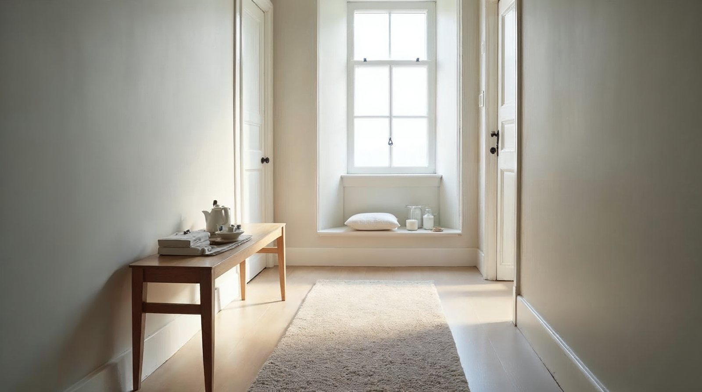
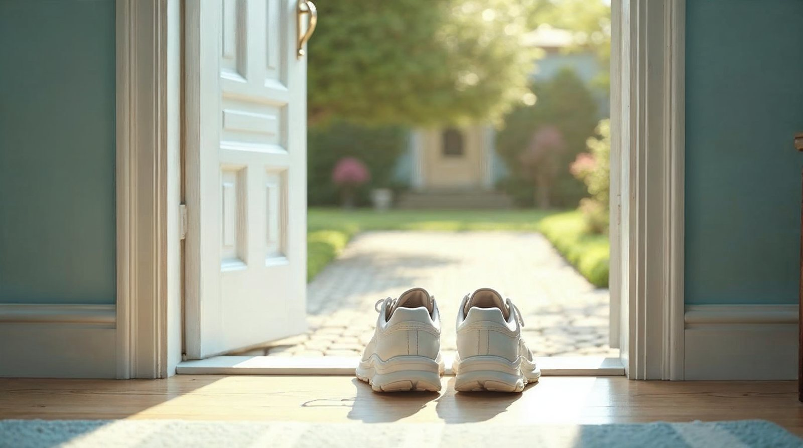
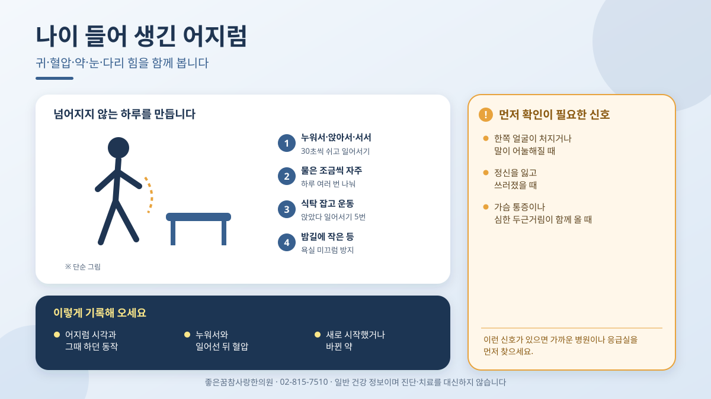

이종호 한의사 감수좋은꿈참사랑한의원 대표원장 (한의사 면허번호 19769)발행 2026-11-26 · 수정 2026-11-26
이 글의 차례
어머니가 요즘 부쩍 벽을 짚고 걸으십니다. 아침에 이불에서 일어나실 때 한참을 앉아 계시고, 화장실을 다녀오시다 문틀을 붙잡고 잠시 멈추십니다. "어지러우세요?" 하고 여쭈면 "나이 들면 다 그렇지" 하고 웃으시지만, 그 웃음 뒤에 넘어질까 걱정하시는 마음이 보입니다.
진료실에서 어르신의 어지럼을 여쭈면 대답이 한 가지로 모이지 않는 경우가 많습니다. 일어설 때 핑 돌기도 하고, 걸을 때 몸이 기우는 것 같기도 하고, 고개를 돌리면 빙글 돌기도 하신답니다. 연세가 드시면 어지럼은 한 가지 원인보다 여러 가지가 겹쳐서 오는 경우가 많습니다.
"나이 탓"이라는 말 안에는 사실 살펴볼 것이 많이 숨어 있습니다. 귀의 평형 기관, 혈압, 드시는 약, 눈, 발바닥 감각, 다리 근력이 하나씩 조금씩 약해지면서, 그 합이 어지럼과 휘청임으로 나타납니다. 하나씩 짚어 보면 손볼 수 있는 부분이 생각보다 많습니다.
이 글에서는 연세 드신 분들의 어지럼이 왜 생기는지, 어떤 원인을 함께 살펴야 하는지, 낙상을 줄이기 위해 집과 생활에서 무엇을 해 볼 수 있는지를 차근차근 정리했습니다. 부모님을 모시는 가족분들께도 도움이 되셨으면 합니다.
노인 어지럼은 어떤 모습으로 나타나나요?
연세 드신 분들이 말씀하시는 어지럼은 여러 모양입니다. 앉았다 일어설 때 눈앞이 캄캄하고 핑 도는 어지럼, 걸을 때 몸이 한쪽으로 쏠리거나 바닥이 흔들리는 듯한 휘청임, 누웠다 일어나거나 돌아누울 때 빙글 도는 어지럼이 흔합니다.
어지럼과 함께 다리에 힘이 없고, 걸음이 짧아지고, 발을 끌며 걷게 되기도 합니다. 넘어질까 걱정되어 바깥 나들이를 줄이다 보면 다리 힘이 더 빠지고, 그러면 다시 어지럼과 휘청임이 심해지는 고리가 생기기 쉽습니다.
어르신들은 어지럼을 '기운이 없다', '머리가 띵하다', '다리가 후들거린다'처럼 다르게 표현하시기도 합니다. 가족이 보기에 걸음이 달라졌거나 벽과 가구를 짚고 다니신다면, 본인이 어지럽다고 말씀하지 않으셔도 한 번 살펴볼 때입니다.
왜 나이가 들면 어지럼이 잦아질까요
우리 몸은 귀 속의 평형 기관, 눈으로 보는 정보, 발바닥과 관절에서 오는 감각을 함께 써서 균형을 잡습니다. 그리고 다리와 몸통 근육이 그 정보에 맞춰 재빨리 몸을 바로 세웁니다. 이 모든 과정이 어릴 때는 아무 노력 없이 자동으로 이루어집니다.
나이가 들면 이 각각이 조금씩 약해집니다. 귀의 평형 기관이 둔해지고, 백내장이나 노안으로 시야가 흐려지고, 당뇨나 허리 문제로 발바닥 감각이 무뎌지고, 다리 근육이 줄어듭니다. 하나하나는 작은 변화지만, 함께 겹치면 균형을 잡기가 확연히 어려워집니다.
혈압을 조절하는 힘도 약해집니다. 젊을 때는 일어서는 순간 혈관이 재빨리 조여 머리로 가는 피를 지켜 주지만, 연세가 드시면 이 반응이 느려져 일어설 때 잠깐 머리로 가는 피가 모자라 핑 도는 일이 잦아집니다. 물을 적게 드시는 습관도 여기에 더해집니다.
여기에 드시는 약이 늘어나는 것도 큰 이유입니다. 혈압약, 이뇨제, 수면제, 신경안정제, 일부 진통제와 감기약은 어지럼이나 휘청임을 부를 수 있습니다. 약이 다섯 가지 넘게 늘어나면 서로 겹치는 영향도 커집니다. 그래서 어르신의 어지럼을 살필 때 약 확인은 빠질 수 없습니다.
함께 살펴야 할 원인들
연세 드신 분의 어지럼을 살필 때 흔히 짚어 보는 것들을 모아 보면 이렇습니다. 대개 두세 가지가 겹쳐 있습니다.
- 누웠다 일어나거나 돌아누울 때 빙글 도는 이석증
- 앉았다 일어설 때 혈압이 내려가는 기립성 어지럼
- 드시는 약의 영향, 특히 혈압약·수면제·안정제
- 백내장이나 맞지 않는 안경으로 흐려진 시야
- 당뇨나 허리 문제로 무뎌진 발바닥 감각
- 줄어든 다리 근력과 굳은 발목·고관절
- 물을 적게 드셔서 생기는 탈수, 빈혈
이석증은 연세 드신 분들에게 아주 흔하고, 이비인후과에서 머리 위치를 바꿔 돌을 제자리로 돌리는 방법으로 다루는 경우가 많습니다. 빙글 도는 어지럼이 누울 때나 일어날 때 짧게 반복된다면 이비인후과 진료를 먼저 권합니다.
심장 박동이 불규칙하거나 느린 경우에도 어지럼이 올 수 있습니다. 맥이 불규칙하게 느껴지거나 두근거림과 함께 어지럼이 온다면 내과나 심장 쪽 진료로 확인해 보시는 것이 좋습니다.
드시는 약을 함께 정리하기
어르신 어지럼을 살필 때 저는 약 봉투부터 펼쳐 봅니다. 여러 병원에서 처방받은 약, 약국에서 사신 약, 건강식품까지 모두 늘어놓고 보면 비슷한 성분이 겹쳐 있거나, 어지럼을 부를 수 있는 약이 함께 들어 있는 경우가 있습니다.
그렇다고 혼자 약을 줄이거나 끊으시면 안 됩니다. 어지럼이 약과 관련이 있어 보이면 약 목록을 정리해 처방한 선생님께 가져가 상의하시도록 안내해 드립니다. 다니시는 병원이 여럿이라면 한 곳에 모든 약을 보여 주고 함께 점검받는 것이 좋습니다.
새로 약을 시작했거나 용량이 바뀐 뒤에 어지럼이 생겼다면 그 날짜를 기억해 두세요. 약과 어지럼의 관계를 짐작하는 데 아주 중요한 단서가 됩니다.

낙상이 걱정될 때
연세 드신 분의 어지럼에서 가장 걱정되는 것은 넘어지는 일입니다. 한 번 넘어지면 손목이나 고관절을 다치기 쉽고, 다친 뒤에는 움직임이 줄어 다리 힘이 더 빠집니다. 넘어진 경험 자체가 두려움을 남겨 바깥 나들이를 줄이게 만들기도 합니다.
넘어지는 일은 대개 집 안에서, 그것도 익숙한 곳에서 일어납니다. 밤에 화장실을 가다가, 욕실 바닥에서, 현관 문턱에서, 높은 곳의 물건을 꺼내다가 넘어지시는 경우가 많습니다. 그래서 집 안 환경을 손보는 것이 어지럼 관리의 큰 부분입니다.
- 침실에서 화장실까지 밤에 켜지는 작은 등 달기
- 욕실 바닥에 미끄럼 방지 매트, 변기 옆에 손잡이 달기
- 문턱과 바닥에 늘어진 전선, 작은 깔개 치우기
- 자주 쓰는 물건은 허리와 눈높이 사이에 두기
- 실내에서도 뒤꿈치가 감싸지는 미끄럽지 않은 신발 신기
계절에 따라 달라지는 어지럼
여름에는 땀으로 물이 많이 빠지는데, 어르신들은 목마름을 덜 느끼셔서 물을 적게 드시기 쉽습니다. 그러면 피가 진해지고 혈압이 낮아져 일어설 때 핑 도는 일이 잦아집니다. 목이 마르지 않아도 시간을 정해 물을 드시는 습관이 필요합니다.
겨울에는 추위에 몸이 움츠러들고 바깥 나들이가 줄어 다리 힘이 빠지기 쉽습니다. 길이 얼어 미끄러운 날에는 무리해서 나가지 마시고, 집 안에서 식탁을 잡고 하는 운동으로 대신해 주세요. 두꺼운 옷을 겹쳐 입어 몸이 둔해지는 것도 휘청임을 키울 수 있습니다.
잠과 마음도 함께 봅니다
밤에 화장실 때문에 여러 번 깨시는 어르신이 많습니다. 잠에서 막 깬 채 어두운 길을 걸으면 어지럼과 휘청임이 가장 심해지는 때가 됩니다. 저녁에는 물을 조금 줄이고 낮에 나눠 드시며, 밤에 일어날 때는 침대 가장자리에 잠시 앉았다가 불을 켜고 움직여 주세요.
넘어진 뒤로 겁이 나서 바깥에 나가지 않으시면 기분도 함께 가라앉기 쉽습니다. 기운이 없고 입맛이 줄며 잠이 얕아지는 것이 함께 보인다면 마음의 무게도 함께 살펴볼 때입니다. 가족과 함께하는 짧은 산책이 다리와 마음 모두에 힘이 될 수 있습니다.
먼저 이렇게 여쭙니다
처음 오시면 저는 대략 이런 순서로 여쭙니다. 보호자분이 함께 답해 주셔도 좋습니다.
- 어지럼은 일어설 때, 걸을 때, 고개를 돌릴 때 가운데 언제 오나요?
- 빙빙 도나요, 핑 도나요, 휘청이나요?
- 최근 1년 사이 넘어지신 적이 있나요?
- 드시는 약은 몇 가지이고, 최근 새로 시작한 약이 있나요?
- 물은 하루에 얼마나 드시나요?
- 눈이 침침하거나 발바닥 감각이 둔하신가요?
- 하루에 얼마나 걸으시나요?
이 질문들에 답하다 보면 어지럼이 어느 쪽에서 많이 오는지, 무엇부터 손보면 좋을지가 조금씩 보입니다. 정확히 기억나지 않는 부분은 가족분의 이야기가 큰 도움이 됩니다.
일상에서 먼저 해 볼 수 있는 것
어르신 어지럼은 작은 습관 몇 가지로도 넘어질 위험을 줄이는 데 도움이 될 수 있습니다. 아래 가운데 할 수 있는 것부터 하나씩 시작해 보세요.
- 아침에 일어날 때 누운 채 손발 움직이기, 앉아서 잠시 쉰 뒤 일어서기
- 물은 조금씩 자주, 하루 여러 번 나눠 마시기
- 하루 두 번, 식탁을 잡고 의자에서 앉았다 일어서기 다섯 번
- 식탁을 잡고 발뒤꿈치 들었다 내리기 열 번
- 날씨 좋은 낮에 평평한 길을 10~20분 걷기
- 안경은 시력에 맞게, 백내장이 있다면 안과 상담
일어설 때는 '누워서 30초, 앉아서 30초, 서서 30초'를 기억해 두시면 좋습니다. 누운 채 손발을 몇 번 움직이고, 앉아서 숨을 고르고, 일어선 뒤에도 바로 걷지 말고 잠시 서 있다가 걸으시면 핑 도는 어지럼을 줄이는 데 도움이 될 수 있습니다.
다리 근력 운동은 무리하지 않는 것이 중요합니다. 꼭 식탁이나 튼튼한 가구를 잡고 하시고, 어지럼이 심한 날은 쉬어 가세요. 매일 조금씩 꾸준히 하는 것이 몇 주, 몇 달 뒤 걸음의 차이를 만듭니다.
한의원에서 함께 살필 수 있는 경우
- 이비인후과나 내과 확인을 마쳤는데도 어지럼과 휘청임이 이어지는 경우
- 다리 힘이 빠지고 걸음이 불안해 바깥 나들이가 줄어든 경우
- 어지럼과 함께 잠이 얕고 입맛이 없으며 기운이 처지는 경우
- 허리나 무릎이 불편해 걷는 것이 줄면서 균형까지 흔들리는 경우
좋은꿈참사랑한의원에 오시면 먼저 아래 '먼저 확인이 필요한' 신호가 없는지부터 봅니다. 그다음 맥을 짚고 누웠을 때와 섰을 때의 혈압, 서 있는 자세와 걸음, 다리 힘과 발바닥 감각을 함께 살핍니다. 잠과 소화, 대소변, 손발 온도도 여쭙니다.
진찰한 내용을 바탕으로 집에서 할 운동 한두 가지와 함께 침, 온열 관리, 한약 상담 가운데 지금 상태에 맞는 것을 정합니다. 어르신은 드시는 약이 많은 경우가 흔해서, 한약은 드시는 약을 모두 확인한 뒤 특히 신중하게 정합니다. 처방받은 약은 상의 없이 멈추지 않습니다.
이렇게 기록해 오시면 상담이 쉬워집니다
어르신 어지럼은 언제, 어떤 동작에서 오는지를 아는 것이 가장 중요합니다. 2주 정도 가족과 함께 간단히 적어 보세요.
- 어지럼이 온 시각과 그때 하던 동작
- 어지럼의 느낌(빙빙, 핑, 휘청)과 이어진 시간
- 아침에 일어난 뒤와 저녁의 혈압
- 하루 마신 물의 양(컵 수)
- 넘어질 뻔했거나 넘어진 일
- 새로 시작했거나 바뀐 약
기록을 보면 어지럼이 아침 기상 때 몰리는지, 약을 드신 뒤 몇 시간 사이에 몰리는지, 물을 적게 드신 날 심한지 같은 흐름이 보입니다. 그 흐름이 무엇부터 손볼지 알려 줍니다.
기록은 어르신 혼자 적기보다 가족이 함께 챙겨 주시면 좋습니다. 달력에 어지럼이 있던 날 표시만 해 두셔도 충분합니다. 멀리 사는 가족이라면 전화로 하루 한 번 안부를 여쭈며 함께 적어 두셔도 됩니다.
혈압계가 집에 있다면 누워서 한 번, 일어서서 1분 뒤에 한 번 재어 두 숫자를 나란히 적어 보세요. 일어선 뒤 숫자가 크게 떨어진다면 기립성 어지럼을 짐작하는 데 쓸모 있는 정보가 됩니다.

다시 바깥으로 한 걸음
넘어질까 걱정되어 집에만 머물다 보면 다리 힘은 더 빠지고 마음도 함께 가라앉기 쉽습니다. 어지럼을 하나씩 살피고 집 안을 안전하게 바꾸면서, 다시 바깥으로 한 걸음씩 나가는 것이 목표입니다.
이번 주에는 일어설 때 '누워서, 앉아서, 서서 30초씩' 하나만 해 보세요. 다음에 오시면 약 봉투와 어지럼 기록을 함께 펼쳐 놓고, 무엇부터 손볼지 가족분과 같이 정해 보겠습니다.
이런 증상은 먼저 확인이 필요합니다
- 갑자기 한쪽 얼굴이 처지거나 말이 어눌해지고 한쪽 팔다리에 힘이 빠지는 어지럼
- 정신을 잃고 쓰러졌거나 가슴 통증, 심한 두근거림, 숨참이 어지럼과 함께 오는 경우
이런 신호가 있으면 한의원보다 가까운 병원이나 응급실을 먼저 찾으세요.
함께 읽으면 좋은 글
- 지하철역 계단을 오르내릴 때 어지럽고 다리가 휘청할 때는 어떻게 살피나요?
- 앉았다 일어설 때 어지러운 것은 어떤 점을 살펴보나요?
- 70대 어르신 집의 욕실과 현관은 낙상을 줄이려면 어떻게 점검하나요?
- 돌아누울 때 세상이 빙빙 도는 이석증 어지럼은 어떻게 살피나요?
- 한의원 가기 전에 복용 약 목록은 어떻게 정리하면 좋나요?

여쭙는 것
- 어지럼은 일어설 때, 걸을 때, 고개를 돌릴 때 가운데 언제 오나요?
- 빙빙 도나요, 핑 도나요, 휘청이나요?
- 최근 1년 사이 넘어지신 적이 있나요?
생활에서 해 볼 것
- 아침에 일어날 때 누운 채 손발 움직이기, 앉아서 잠시 쉰 뒤 일어서기
- 물은 조금씩 자주, 하루 여러 번 나눠 마시기
- 하루 두 번, 식탁을 잡고 의자에서 앉았다 일어서기 다섯 번
한의원에서 함께 살필 것
- 이비인후과나 내과 확인을 마쳤는데도 어지럼과 휘청임이 이어지는 경우
- 다리 힘이 빠지고 걸음이 불안해 바깥 나들이가 줄어든 경우
- 어지럼과 함께 잠이 얕고 입맛이 없으며 기운이 처지는 경우
먼저 확인이 필요한 신호
- 갑자기 한쪽 얼굴이 처지거나 말이 어눌해지고 한쪽 팔다리에 힘이 빠지는 어지럼
- 정신을 잃고 쓰러졌거나 가슴 통증, 심한 두근거림, 숨참이 어지럼과 함께 오는 경우
한눈에 보는 표
| 구분 | 핵심 |
|---|---|
| 여쭙는 것 | 어지럼은 일어설 때, 걸을 때, 고개를 돌릴 때 가운데 언제 오나요? 빙빙 도나요, 핑 도나요, 휘청이나요? |
| 생활에서 해 볼 것 | 아침에 일어날 때 누운 채 손발 움직이기, 앉아서 잠시 쉰 뒤 일어서기 물은 조금씩 자주, 하루 여러 번 나눠 마시기 |
| 한의원에서 함께 살필 것 | 이비인후과나 내과 확인을 마쳤는데도 어지럼과 휘청임이 이어지는 경우 다리 힘이 빠지고 걸음이 불안해 바깥 나들이가 줄어든 경우 |
| 먼저 확인이 필요한 신호 | 갑자기 한쪽 얼굴이 처지거나 말이 어눌해지고 한쪽 팔다리에 힘이 빠지는 어지럼 정신을 잃고 쓰러졌거나 가슴 통증, 심한 두근거림, 숨참이 어지럼과 함께 오는 경우 |
자주 묻는 질문
나이 들면 어지러운 건 어쩔 수 없는 건가요?
나이와 함께 균형을 잡는 힘이 약해지는 것은 맞지만, 어지럼에는 약, 혈압, 물, 시력, 다리 힘처럼 손볼 수 있는 원인이 함께 있는 경우가 많습니다. 하나씩 살펴보면 줄일 수 있는 부분이 보입니다.
약이 너무 많은데 어지럼과 관련이 있을까요?
혈압약, 수면제, 안정제처럼 어지럼을 부를 수 있는 약이 있습니다. 혼자 줄이지 마시고 약 목록을 정리해 처방한 선생님과 상의하세요. 진료 때 약 봉투를 가져오시면 함께 정리를 도와드립니다.
어지러우면 움직이지 않고 쉬는 게 낫지 않나요?
심한 어지럼이 있을 때는 쉬는 것이 맞지만, 오래 움직이지 않으면 다리 힘이 빠져 휘청임이 더 심해질 수 있습니다. 식탁을 잡고 하는 간단한 운동과 짧은 걷기를 조금씩 이어 가시길 권합니다.
부모님 혼자 오셔도 되나요?
혼자 오셔도 괜찮지만, 처음에는 보호자분과 함께 오시면 집에서의 모습과 드시는 약을 정확히 살피는 데 도움이 됩니다. 걸음이 불안하시다면 이동하실 때 곁에서 함께해 주세요.
한약을 드셔도 괜찮을까요?
어르신은 드시는 약이 많은 경우가 흔해서, 모든 약을 확인한 뒤 몸 상태에 맞춰 특히 신중하게 상의합니다. 필요하면 처방한 선생님과 상의하시도록 안내합니다.
좋은꿈참사랑한의원은 재진 때 지난번 이야기부터 이어서 여쭙니다. 진료시간과 예약은 오시는 길에서 확인하세요.
어디서 상담받을 수 있나요?
좋은꿈참사랑한의원은 서울 동작구 만양로2길 2 신성빌딩 3층·5층(서울 동작구 상도동, 7호선 상도역 3번 출구 근처)에 있습니다. 한의사 3명(이종호 대표원장, 조영기 수석진료원장, 정원영 진료원장)이 진료합니다. 진료시간은 평일 09:30~20:00(점심 13:00~14:00), 토·일·공휴일 09:30~15:00이며, 방문 전 전화로 확인을 권합니다. 예약은 네이버 예약, 카카오톡 상담, 전화 02-815-7510로 받습니다.
이 글은 일반적인 건강 정보이며 개인의 진단이나 치료를 대신하지 않습니다. 증상이 있거나 복용 중인 약이 있다면 진료를 통해 확인하세요. 치료 효과는 개인마다 다를 수 있습니다.
작성 기준: 일반적으로 알려져 있는 건강 정보를 참고해 정리했습니다(대표원장 감수). 증상 기록은 1~2주 동안 하루 1회, 비슷한 시간에 적어 오시면 지난 상태와 비교하기 쉽습니다.